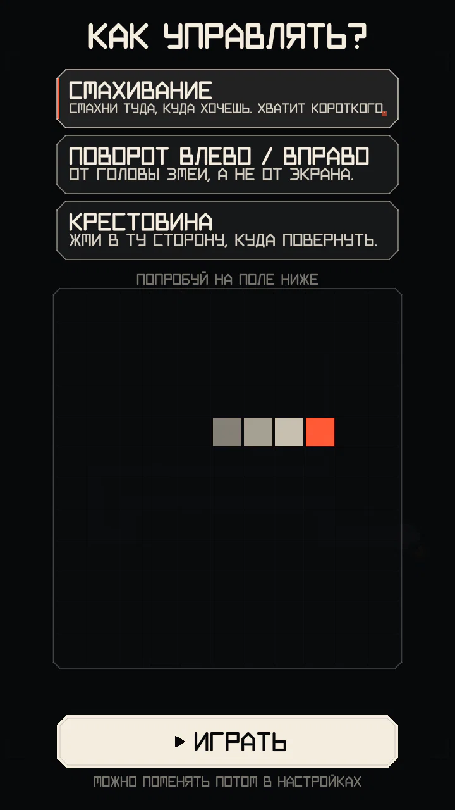

Поле, управление, скорость
Правила обычного движения: поле, управление, скорость змейки и её длина.
Поле
- Поле — 13 клеток в ширину и 21 в высоту (273 клеток). Края убивают.
- Змейка стартует длиной 6 клеток внизу по центру, головой вверх.
- Один шаг сдвигает голову ровно на одну клетку. Развернуться назад, в собственную шею, нельзя: поворот на 180° игнорируется.
- Въехать в клетку, которую на этом же шаге освобождает хвост, можно.
- Забег кончается, когда голова врезается в край, в своё тело или в любую смертельную конструкцию (столб, живая стойка, провод, изолятор). В кампании он ещё кончается, когда выходит время или набран ИДЕАЛ.
Управление


Три схемы. Выбираешь при первом запуске, менять можно в настройках:
СМАХИВАНИЕ (по умолчанию)
Смахни туда, куда хочешь ехать. Поворот срабатывает прямо во время жеста, так что хватает совсем короткого движения, а жест буквой «Г» делает два поворота, не отрывая пальца. Направление на экране = направление движения — это помогает, когда змейка едет вниз или вбок.
ПОВОРОТ ВЛЕВО / ВПРАВО
Нажми на левую или правую половину экрана, чтобы повернуть налево или направо от головы змеи (когда она едет вниз, «налево» — это правая сторона экрана). Срабатывает в момент касания. Удобно играть одной рукой.
КРЕСТОВИНА
Четыре кнопки-стрелки — в полосе под полем или поверх поля; кнопки можно показывать всегда или только при касании.
Очередь ввода: запоминается до двух поворотов, так что быстрый двойной ввод делает разворот за два шага. Повороты применяются на ближайшем шаге.
Пауза и продолжение
После ПРОДОЛЖИТЬ в меню паузы и после разовой карточки с объяснением поле делает обратный отсчёт (3 счёта по 0,5 с), прежде чем снова поехать. Стрелки от головы показывают, куда змейка тронется; поворот во время отсчёта меняет это первое направление (разворот назад по-прежнему не срабатывает, а повернуть обратно «прямо» — значит отменить поворот). Касание, которым закрываешь карточку, змейкой не управляет. В видео забега пауза и отсчёт не попадают.
Клавиатура (версии для компьютера): стрелки / WASD — руль, P — пауза.
Скорость
- Змейка ускоряется по мере того, как ты ешь: заметно на первых узлах, дальше всё мягче. Со временем сама по себе она не ускоряется — терпеливого игрока никто не торопит.
- Чем выше множитель, тем быстрее змейка — игра становится требовательнее как раз тогда, когда счёт растёт быстрее всего. Упал множитель — змейка снова замедлилась.
- Модуль ФОРСАЖ ненадолго добавляет ещё скорости.
- Скорость меняется плавно, без случайных скачков.
Поле живёт в своём темпе при любой частоте экрана: 60, 90 или 120 Гц делают движение только плавнее. Точная длина шага — в разделе Тонкости механики.
Узлы и рост
Каждый узел приносит 10 × множитель очков и удлиняет тело. Первые узлы удлиняют сильнее — так быстрее появляется тело, вдоль которого можно строить коридоры; дальше каждый узел добавляет понемногу.
Где появляются узлы
- Никогда на теле или конструкции, никогда на цели события, и всегда так, чтобы до узла можно было добраться.
- Никогда прямо перед головой.
- Клетки рядом с телом и на средней дистанции выпадают чаще: узлы тянут тебя обратно вдоль твоих же коридоров.
- Расстановка зависит от зерна забега, поэтому в повторе и в испытании дня при тех же ходах узлы всегда те же.
Долго не есть — себе дороже: см. голод.